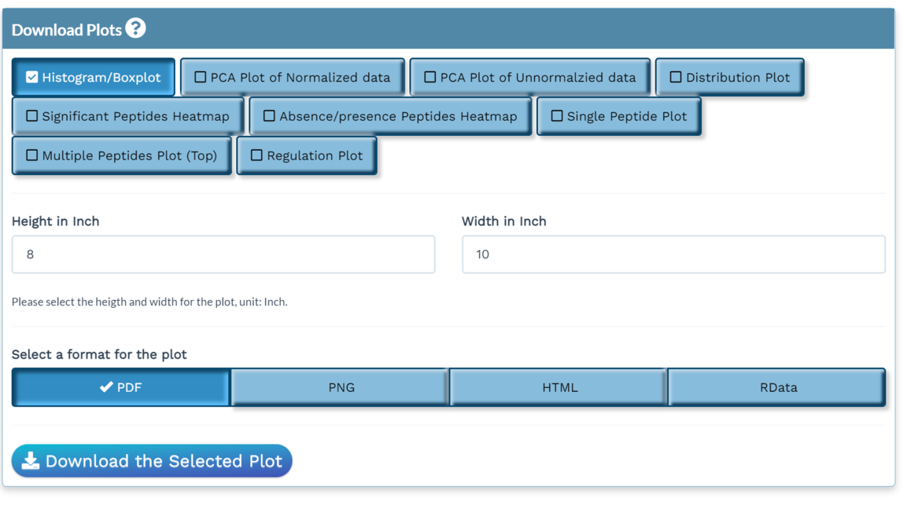

The NetPhorce Shiny application allows you to download the plots you have generated and the processed data.
Plot download
On the Left Download Panel, you can select the plot you want to download, as well as the dimensions and the format of the image. 
-
PNG and PDF are static formats for which you can choose the height and width of the plot in inch.
- Note: Because the plot is rendered from ggplot instead of plotly, there might be a slight difference in hue of the same color.
-
HTML is the interactive format as displayed in the Shiny application. There is no height and width control as you can drag the HTML to resize the plot interactively.
- Note: The Network plot does not allow alteration of the size due to a pakcage limitation
-
rData can be used to load the processed plotting data directly to the NetPhorce R package environment, which allow users to re-color and re-desing the plots.
Data download
On the Right Download Panel, you can select the processed data you want to download as well as the data format.
As you go through the NetPhorce Shiny application, you will generate the following data:
After Step 1 is completed:
-
Normalized Data: The normalized and log2-transformed intensity values for each sample.
-
Raw Log Data: The log2-transformed intensity values for each sample.
-
Output Statistics: The output statistics table contains the term for which the statistics are reported, the degrees of freedom, which is calculated as the number of groups -1, the overall F-statistic of the anova, the p-value associated with the F-statistic, and the q-value estimated based on the p-values.
-
Full Table: The full table contains the protein ID, the conditions, whether a peptide was included for statistics (StatsSet) or identified as an absence/presence peptide (UniqueSet), and the log2-transformed normalized intensities for each sample as well as the average across the replicates. The table also contains information about the phosphorylation site, including the amino acid, the position, the multiplicity, and the sequence window.
After Step 3 is completed:
-
Network Regulations: The network regulations file can be used as input for Cytoscape. The table lists the regulators and its targets, as well as the type of regulation, the timelapse, and Bayesian Dirichlet equivalence uniform (BDei) score for each inferred interaction. The higher the BDei score, the higher the confidence of the inference. For time lapse 0, the change over time of the target and regulator was compared at the same time points, while for time lapse 1, the change over time of the target was compared with that of the regulator at the immediate prior time point.